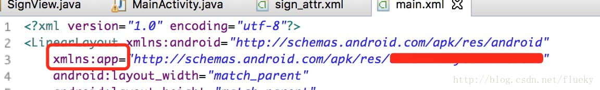

促进小飞哥写代码的动力只有两个。第一个是为了挣钱钱，第二个是为了挣更多的钱。所以毫无疑问，电子签名又是公司最近需要开发的新功能。
应用场景：以前去银行办理业务都得去柜台，填N张表格，写N多个签名。随着智能机的普及、移动终端app的使用场景越来越广泛。手机银行app也给越来越多的人办理银行业务提供便捷，妈妈再也不用但是我们去银行排队浪费时间了。然而，有的业务该走的流程必须得走，所以电子签名的需求也就凸显出来。
这是一篇技术博客，那废话就不多说了。
1 原理 在Android开发中，所有用户可见的页面都是由一个个View（视图）拼接而成。Google 已经提供了很多的基础的View组件，如：显示图片的ImageView，显示文字的TextView，这些已经被造好的轮子能够让我们很方便的去开发绝大多数app。除此之外，有些轮子还得自己造，不然要程序员干嘛呢？虽然网上已经有很多已经实现过电子签名，但是小飞哥一直以来都崇尚自己动手，哪怕是Hello Word 也绝不copy。（又扯远了！！！）
说了那么多，实现电子签名的组件（在程序中命名SignView）需要继承View，这也是面向对象编程的一大特色，直接继承View，为我们省去不少麻烦。记录用户在触屏上滑动的轨迹、重写onDraw方法将轨迹在屏幕上绘制出来，就实现了我们需要的效果了。然而一切并没有结束，还需要保存为图片，先上图：
2 定义属性 1 2 3 4 5 6 7 8 9 private Paint linePaint;private ArrayList<Path> lines;private int lineCount;private final int DEFAULT_LINE_WIDTH = 10 ;private int lineColor = Color.BLACK;private float lineWidth = DEFAULT_LINE_WIDTH;
画笔：在屏幕上绘制出我们写下的笔迹，画笔主要有两个属性，颜色和粗细。这也是在程序中只开放设置接口的两个属性。
笔迹集合：不否认有人写字时喜欢一气呵成，但是支持多笔输入，可以让程序支持更多输入场景。
默认值：默认字迹颜色黑色，字迹宽度10 个像素点（这是一个很细的线，随便写的，不要介意）
3 接受输入信息 1 2 3 4 5 6 7 8 9 10 11 12 13 14 15 16 17 18 19 20 21 22 23 24 @Override public boolean onTouchEvent (MotionEvent event) { if (event.getAction() == MotionEvent.ACTION_DOWN) { Path path = new Path (); path.moveTo(event.getX(), event.getY()); lines.add(path); lineCount = lines.size(); } else if (event.getAction() == MotionEvent.ACTION_MOVE) { lines.get(lineCount - 1 ).lineTo(event.getX(), event.getY()); invalidate(); } else { } return true ; }
用户点击和在屏幕上移动都会触发该方法。MotionEvent指的是手指在屏幕上的运动事件。包含动作类型：按下、移动、抬起。点击屏幕上的位置，通过event.getX(),event.getY()方法获取。
用Path（路径）类，按下屏幕为记录笔画的开始，在屏幕上移动记录笔画的轨迹。调用invalidate方法，清空当前视图的图像信息并通知系统刷新视图，增加显示刚刚输入的信息。
4 显示输入信息 1 2 3 4 5 6 7 8 9 10 11 12 13 14 @Override protected void onDraw (Canvas canvas) { super .onDraw(canvas); if (lines != null && lines.size() > 0 ) { for (Path path : lines) canvas.drawPath(path, linePaint); } }
onDraw方法，多数情况下为系统调用，（用户也可以自己调用，后面用到），通过Canvas（画布）将之前保存的笔迹绘制出现。参数中，指定了一个画笔。
5 定义画笔 1 2 3 4 5 6 7 8 9 10 11 12 13 14 15 private void initLinePaint () { linePaint = new Paint (); linePaint.setColor(lineColor); linePaint.setStrokeWidth(lineWidth); linePaint.setStrokeCap(Cap.ROUND); linePaint.setPathEffect(new CornerPathEffect (50 )); linePaint.setStyle(Style.STROKE); }
简简单单的几行，每行作用都极大。Cap.ROUND使笔迹起始、结束位置为圆形，PahtEfect指笔迹的风格，CornerPathEffect在拐角处添加弧度，弧度半径50像素点。
绘制和显示笔迹的原理部分就介绍完了。在使用中，有以上的代码还远远不够。
需要开放出接口，使别人可以自主的设置笔迹颜色、宽度。
可以让别人获取到输入的图像信息，转成Bitmap对象或存文件。
当书写错误，可以清空屏幕重新书写等。
6 设置画笔属性 在Android中，使用View有两种方式。
在xml布局文件中添加view并指定组件属性
在代码中动态添加view，最不被开发者所接受的方式
6.1 代码设置 1 2 3 4 5 6 7 8 9 10 11 12 13 14 15 16 17 public void setLineColor (int lineColor) { this .lineColor = lineColor; linePaint.setColor(lineColor); } public void setLineWidth (float lineWidth) { this .lineWidth = lineWidth; linePaint.setStrokeWidth(lineWidth); }
通过在代码中调用组件的set方法，可以在任意时候设置画笔的属性。
6.2 自定义组件属性 既然可以通过再xml布局中使用自定义的组件，那么我们当然也希望可以在xml布局中静态的指定画笔颜色和宽度。10像素点的粗细是不被使用者所接受的。
通过如下的代码，给SignView声明两个新属性。
1 2 3 4 5 6 7 8 9 <?xml version="1.0" encoding="utf-8" ?> <resources > <declare-styleable name ="SignView" > <attr name ="lineColor" format ="color" /> <attr name ="lineWidth" format ="dimension" /> </declare-styleable > </resources >
6.3 使用自定义属性 1 2 3 4 5 6 7 <com.flueky.android.view.SignView android:id ="@+id/main_sign" android:layout_width ="400dp" android:layout_height ="400dp" app:lineColor ="#FF0000" app:lineWidth ="6dp" > </com.flueky.android.view.SignView >
眼尖的读者们很定奇怪，app是怎么来的，怎么通过 app:lineColor就能使用我们之前新声明的两个属性。

如图所所示，需要在布局文件的根节点定义app属性。同第一行定义android属性一样。我们只需要将res后面被涂改的部分替换成我们自己应用的包名即可。如果是在lib工程里，需要写成 xmlns:app="http://schemas.android.com/apk/res-auto"。
最后，还需要在代码中，获取到在xml布局布局中设置的属性值。需要介绍下view的四个构造函数的作用。
1 2 3 4 5 6 7 8 9 10 11 12 13 14 15 16 17 18 19 20 21 22 23 24 25 26 27 28 29 30 31 32 33 34 35 36 37 38 39 40 41 42 43 44 45 46 47 48 49 50 51 52 53 54 @SuppressLint("NewApi") public SignView (Context context, AttributeSet attrs, int defStyleAttr, int defStyleRes) { super (context, attrs, defStyleAttr, defStyleRes); if (attrs != null ) { TypedArray tArray = context.obtainStyledAttributes(attrs, R.styleable.SignView, defStyleAttr, defStyleRes); parseTyepdArray(tArray); } initLinePaint(); lines = new ArrayList <Path>(); } public SignView (Context context, AttributeSet attrs, int defStyleAttr) { super (context, attrs, defStyleAttr); if (attrs != null ) { TypedArray tArray = context.obtainStyledAttributes(attrs, R.styleable.SignView, defStyleAttr, 0 ); parseTyepdArray(tArray); } initLinePaint(); lines = new ArrayList <Path>(); } public SignView (Context context, AttributeSet attrs) { super (context, attrs); if (attrs != null ) { TypedArray tArray = context.obtainStyledAttributes(attrs, R.styleable.SignView); parseTyepdArray(tArray); } initLinePaint(); lines = new ArrayList <Path>(); } public SignView (Context context) { super (context); initLinePaint(); lines = new ArrayList <Path>(); }
以上4个构造函数中，三个都包含AttributeSet参数。除了第四个是在代码中动态添加组件使用，其余三个可以映射到布局文件中的代码。
1 2 3 4 5 6 7 8 9 10 11 12 private void parseTyepdArray (TypedArray tArray) { lineColor = tArray.getColor(R.styleable.SignView_lineColor, Color.BLACK); lineWidth = tArray.getDimension(R.styleable.SignView_lineWidth, DEFAULT_LINE_WIDTH); }
7 获取图像信息 1 2 3 4 5 6 7 8 9 10 11 12 13 14 15 16 17 18 19 20 21 22 public Bitmap getImage () { Bitmap bitmap = Bitmap.createBitmap(getWidth(), getHeight(), Config.RGB_565); Canvas canvas = new Canvas (bitmap); Drawable bgDrawable = getBackground(); if (bgDrawable != null ) bgDrawable.draw(canvas); else canvas.drawColor(Color.WHITE); draw(canvas); return bitmap; }
8 保存图像到文件 1 2 3 4 5 6 7 8 9 10 11 12 13 14 15 16 17 18 19 20 21 22 23 24 25 26 public boolean saveImageToFile (String filePath) { try { File file = new File (filePath); if (!file.exists()) { file.createNewFile(); } FileOutputStream fos = new FileOutputStream (file); getImage().compress(CompressFormat.PNG, 100 , fos); fos.flush(); fos.close(); return true ; } catch (FileNotFoundException e) { return false ; } catch (IOException e) { return false ; } }
9 清空输入 1 2 3 4 public void clearPath () { lines.removeAll(lines); invalidate(); }
觉得有用？那打赏一个呗。[去打赏](/donate/)